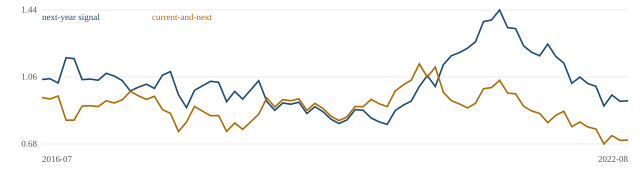

docs/plan/sealed-test-record.md. This note reports the negative
result whether good or bad. Nothing here is a promoted strategy, and the repository's promotion gate is
CLOSED.
Long-lived infrastructure is sold before it is built, so a schedule is a published promise. When it moves, the cash flow moves: a delayed substation defers a utility's rate base, a slipped turbine defers a developer's revenue, a postponed commencement defers rent. The party holding schedule risk pays the party paid on delivery, and that transfer is the object of this study.
It is not simply priced away. The revision hides in a monthly inventory of planned generators and in filing notes; the median revision is exactly twelve months, which reads as routine roll-forward rather than news; the same obligation must be joined across sources by plant and generator identity; and the measured lag from period end to public disclosure is 33 to 94 days depending on the field. A reader who waits for a headline never sees the revision at all.
What the design does not establish, stated first. The counterparty is named but not measured. No test here observes a forced payer, so the tests can falsify a return claim and cannot confirm the mechanism. That limit is stated before any number below.
| Project level, 2015–2023 | Value | Meaning |
|---|---|---|
| Promises that moved | 3,783 | 3,687 later, 96 earlier |
| Median slip | 12 months | mean 13.2, worst 120 |
| Cancelled or postponed | 711 | formal withdrawals |
| Promised against realized | 64% late | of 721 generators promised in 2015 and running by 2023; median 2 months, worst 83 |
| Concentration | solar 1,682 | then onshore wind 435, hydro 371, batteries 362, gas CC 272 |
| Promised next-year capacity | +41.7% a year | median growth, 2016–2024; the series is one-signed in 89% of months |
Tracking 6,407 generators across monthly vintages sharpens the picture: a first revision arrives a median of 5 months after a project first appears, 36 percent are a nudge of one month or less and 27 percent are six months or more, and 44 percent of tracked generators still had a real revision. The hazard rises with age (23 percent in the first six months, 44 percent between one and two years), so a promise is not safer for having survived. A signal built on all revisions is dominated by month-sized noise; the tail is where information lives, and the one-signed growth series is the trap section 4 documents.
Project revisions rarely belong to a listed company: only 6.2 percent of slipped capacity sits with an entity whose name carries a large listed owner, against 80 percent held by project and holding companies, so the project route was abandoned at that attribution ceiling. The tradable trace must be what a firm says about itself, and SEC XBRL provides it: every fact names the filing that reported it, which joins to an acceptance timestamp. Measured lags to public availability are 56 days for PWR's remaining performance obligations, 33 for ETN's, and 94 for PWR's disputed change orders. Remaining obligations fall as work is delivered, so a fall is a revision to the disclosed book, not a delay, and each change is measured against the firm's own typical change.
84 timestamped revisions across PWR and ETN, signal lagged to the session after availability, adjusted against a sector benchmark. Negative surprises, the direction the mechanism predicts, show no consistent move at any horizon (25 events, every |t| below 1.3). Positive surprises drift +3.83 percent over twenty sessions, but 70 of the 84 events are one firm across 41 weeks, so the simple explanation is that firm's own run.
Every filer reporting remaining performance obligations at least three times between 2015Q1 and 2024Q3, grouped by its own SIC code: 1,285 filers qualify, 382 fall in a declared industry group and 903 form a placebo, yielding 4,634 usable timestamped revisions. Fifty cells were examined, four groups by two directions by five horizons, and nothing is both meaningful and strong in the predicted direction: a downward surprise, which should be bad news, is flat or mildly positive in every group. The placebo re-runs the identical pipeline with each event's date swapped for another date the same firm published: it produces seven cells with |t| above 2 against two in the real data, with the same average cell mean (+0.284% against +0.281%). These cells are noise at this sample size.
For each month-end vintage, the capacity promised for the next calendar year against the same promise a year earlier, long contractors and electrical equipment, short merchant generators and large utilities when the promise grows and the reverse when it slips, dollar neutral, both legs liquid large caps. Development is 2016-07 to 2022-08; the sealed window 2022-10 to 2024-09 was opened once. The opened row's means are implied from the two recorded runs (full-run minus development, divided by 24 months); the frozen script did not archive the opened window's month-by-month path, and the holdout was not re-opened for it.
| Signal | n | Gross | Net 10bp | Net 20bp | Turnover | Max DD |
|---|---|---|---|---|---|---|
| Next year, development | 74 | +0.29% | +0.07% | −0.15% | 1.1x | −37.8% |
| Next year, opened window | 24 | +0.66% | +0.45% | +0.27% | 1.1x | not archived |
| Current and next, development | 74 | −0.08% | −0.30% | −0.53% | 1.1x | −40.0% |
| Current and next, opened window | 24 | −0.05% | −0.26% | −0.50% | 1.1x | not archived |
The diagnostic that matters more than the table. The next-year signal is positive in 89 percent of months, so its row is a near-static pair rather than a test of a signal, and its opened-window +0.45 percent is the spread between the buildout and scarcity baskets in 2022–2024, not information from the revision. The balanced definition, positive in half the months, is negative after costs in both windows. A selectivity plateau was run: trading only the largest third of revisions gives +0.85 percent a month net at 10bp and +0.58 at doubled costs over 33 months, but that subset is chosen by magnitude and was already visible in development, so it needs a fresh holdout this study cannot give it, and it stays a hypothesis with no evidence.

Development-window equity, net of 10bp per leg, for the next-year and balanced signals (the opened window has no archived path and is reported numerically above). The 2022–2024 buildout regime is what the opened window adds.
Before measuring, the node space is declared: 231 pairs, of which 105 are measurable and the rest are blocked with a written reason. In the mechanism window the scan measured 51 series-level pairs, each against its own generated null; the cross-family count, the one that matters, is none against 0.9 expected. With the holdout opened it measured 62 pairs and found two cross-family survivors against 1.1 expected, both commodity or basket pairs whose legs share constituents. Inside the compute era the same scan found three cross-family survivors against 1.1 expected in development, and after the opened months two against 1.1: the development survivors do not hold up, and the compute price series itself clears its own null against none of eleven partners. A firewall separates the windows because they overlap: nothing found in the compute era may change the mechanism study's design.
Both legs are large-capitalisation US listings with deep daylight liquidity: contractors and electrical equipment on one side (PWR, EME, MTZ, DY, ETN, J, HUBB, ROK), merchant generation and utilities on the other (NRG, VST, D, SO, NEE, EXC). Monthly rebalancing gives about 1.1 times monthly turnover, so 10 basis points per leg per rebalance costs about 22 basis points a month when both legs flip, and every table reports the run at double that. The binding constraint is not liquidity, it is the absence of an edge: a pair trading for years at a 0.04 Sharpe cannot carry meaningful capital, so capacity is moot until an association survives its own placebo.
docs/variants.md, generated from the
artifacts. Across every search, 135 comparisons produced 6 survivors against 5.5 expected by
chance. The control is reported separately because it measures the pipeline rather than the search:
50 comparisons, 7 survivors against 2.5 expected.docs/plan/sealed-test-record.md. Nothing was re-opened, no threshold was changed after the fact,
and the one positive cell is disclosed with its regime explanation above.make check and make test; every
number above comes from a file in results/; each result file carries its own reproduce command in
results/README.md.The phenomenon is real, large and measurable: promises move, they move in whole-year steps, and two thirds of promised generators arrive late. Four increasingly broad tests then fail to turn that into a return signal, the last searching the declared node space rather than one hand-picked path, and the opened windows confirm the nulls. The most useful sentence this study can offer is a measurement rather than a strategy: the slippage in this buildout is too slow and too routine to trade against the firms that disclose it, but it is large enough to change what should be built and where.
Design-time exposure, disclosed. The aggregate capacity signal was defined while the full series was visible, including the months that later became the sealed window, so the window is clean for evaluation and not for definition; the evaluation used development months only, the definition is frozen, and a fresh holdout would be needed before that signal could be called out-of-sample in the strict sense. The opened-window means here are implied from the recorded runs, not from a re-open.
Limits, stated plainly. Attribution stops at the party that reports the obligation, so the project route closed at a 6.2 percent ceiling. Obligations fall when work is delivered, so a revision is not a delay. The sealed window is 24 months, which is small. There is no intraday or option data, because no entitlement was available, so horizons inside a session were never tested. The mechanism's counterparty was never measured, so no result here can confirm it, only falsify a return claim that rests on it.
The sibling directions, each with its own record. Three further directions were tested the
same day and are not pooled here: forced liquidation on a perpetual venue passes the mechanism gates but
fails economics on the evidence (docs/plan/forced-flow-verdict.md); the credit layer found the
aggregate expression null and the per-site instrument blocked by an entitlement
(docs/plan/credit-gauntlet.md); ten-metre imagery does not separate construction states well
enough to read delivery (docs/plan/imagery-test.md).
| Input | Role | Receipt |
|---|---|---|
| EIA-860M monthly generator inventory, 111 vintages | the promise and its revision | eia.gov/electricity/data/eia860m/ |
| SEC EDGAR submissions and XBRL company facts | firm disclosures, with acceptance times | data.sec.gov |
| Daily adjusted closes | price side, sector benchmarks | provider daily bars |
make check # gates: secrets, ledger, structure, paths, owners, chain, market, truths make test # the full suite python scripts/run_capacity_strategy.py # development window result python scripts/summarize_capacity_strategy.py # in-sample and opened-window split python scripts/run_group_event_study.py --placebo
The sealed record is docs/plan/sealed-test-record.md; the result files behind
every number are in results/; the claim path with a falsifier per edge is in
docs/chains/t-capacity-revision.jsonl. A submitted PDF is generated from this file, and the
repository is the deliverable of record.